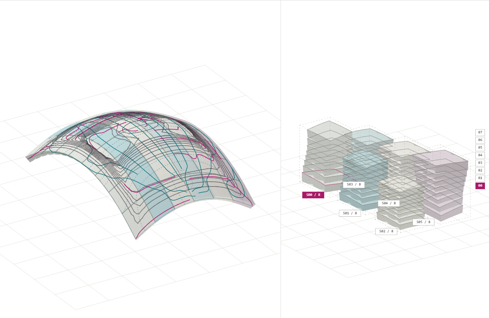
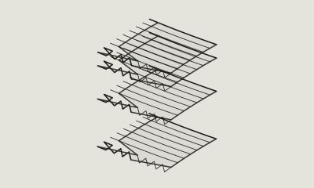
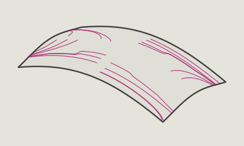
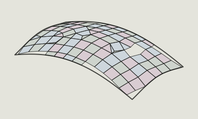
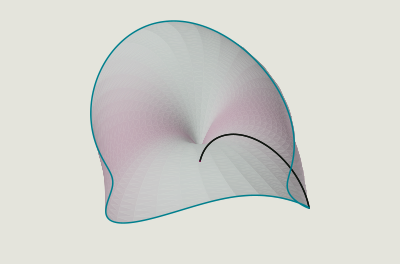
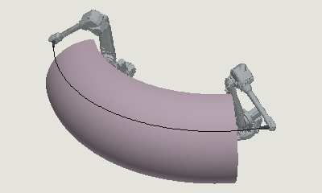
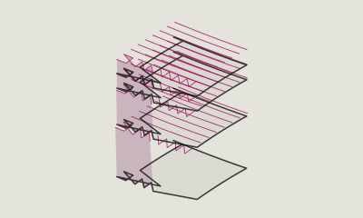
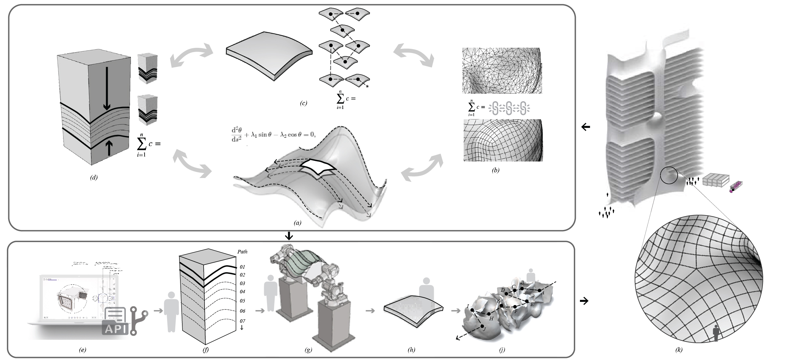

The STACK research project ↗
The wider story: mathematical theory, computational design, digital fabrication, logistics and interdisciplinary integration.

Geometry in two states at once. One ellipse dome follows the process from design to elastic cutting and collaborative robotics.
Browse the original research visuals, inspect computed display results and read the work behind them.
STACK studies geometry in two states at once: assembled as architecture and arranged as a stack.

↗Vector fields bring stacking, structural and fabrication criteria into one geometric language.

↗Fields guide the directions of a panel layout. Inspect the complete recorded layout and its outer boundary.

↗The original ellipse dome study in its deployed shell and casting-stack configurations. This light view shows the recorded result.
DTU studies elastica theory: moving an elastic cutting curve creates a surface. Follow the fitted sections of the same dome.

↗Two collaborative robots guide the cutting curve. Watch the same dome study in the original ABB cell simulation.

↗In a stack, an adjacent interface can determine the upper face of the part below. Local compatibility does not certify physical nesting.

↗
Fabrication offers several approaches to moulds and raw parts, including 3D printing, milling, hot-wire cutting and elastica cutting. This dome study demonstrates the elastica and collaborative robotics research; these techniques are not interchangeable execution modes in this light edition.
SINTEF studies the mathematics of stackability. DTU studies elastica theory. SINTEF and ZHA explore collaborative robotics and fabrication extensions. ZHA investigates how freeform stackability can inform architecture, engineering and construction.
Explore the software ↗ · Additional reading ↗Drag to orbit · scroll to zoom · fixed computed geometry
Drag to orbit · scroll to zoom · fixed computed geometry
Drag to orbit · scroll to zoom · fixed computed geometry
Original recorded display · deployed shell and stacks shown side by side
Drag to orbit · scroll to zoom · start / stop baked motion
Drag to orbit · scroll to zoom · start / stop baked motion
Drag to orbit · scroll to zoom · fixed computed geometry
STACK connects shape, parts, fabrication and logistics. A compact collection can change how parts are stored and transported; building-scale decisions also involve materials, interfaces, machines and people. Our scenes introduce those relationships without estimating loads, nesting efficiency or transport capacity.
Start with the project overview, then follow a topic that caught your eye. The papers below are academic references, including wider research that informs these ideas. Their published methods are not implemented by these illustrative scenes.
The wider story: mathematical theory, computational design, digital fabrication, logistics and interdisciplinary integration.
Jakob, Tarini, Panozzo & Sorkine-Hornung, 2015. How direction fields can guide mesh structure. Includes a project overview and video.
Bergou et al., 2008. A foundational mathematical model for bending and twisting rods. Academic paper; the animation here uses a sine curve.
Brander et al., 2018. Read about the relationship between familiar design curves and elastic curves.
Eigensatz et al., 2010. The design and fabrication questions behind dividing a curved surface into panels.
Pottmann et al., 2007. Geometric relationships between layers in architectural structures.
Brander et al., 2016. Geometric approaches to manufacturing doubly curved architectural surfaces.
Enrique, Monzó, Dell’Endice & Schwartz, 2024. A precast, post-tensioned shell case study connects design with production.
Download Maya Education 0.1.0 ↓
Initial educational release · Maya 2026. Installation instructions inside ZIP. Approximate learning methods; wider installation and UI checks remain open.
A separate plugin for synthetic surfaces, illustrative fields and normal offsets. The desktop plugin currently covers surfaces, fields and offsets; the richer browser scenes are web-only.
Download Rhino / Grasshopper Education 0.1.0 ↓
Initial educational release · Rhino 8 / compiled C#. Installation instructions inside ZIP. Approximate learning methods; wider installation and UI checks remain open.
A separate component library built from the limited educational kernel. The desktop library currently covers surfaces, fields and offsets; the richer browser scenes are web-only.
This public learning site covers the full concept story through approachable studies. The comparison below explains the difference between educational demonstrations and specialist production capabilities.